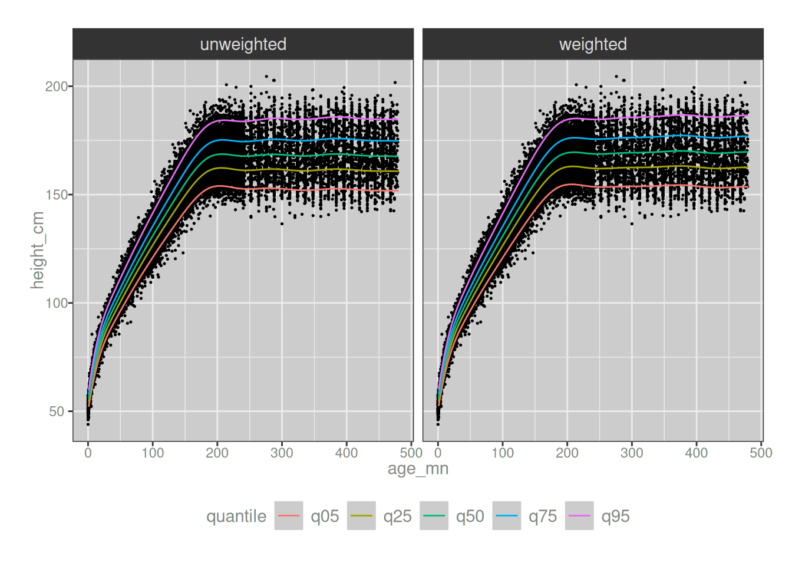

🧠 : Do you mean the monstrosity that took an entire month out of our lives, spawned an unhinged prequel post about the Box-Cox power exponential distribution and then another unhinged prequel post about B-splines and P-splines? The one that brought us to tears several times and made us question our entire reason for being? The one that literally gave you nightmares? The accursed one, the post we swore we were finished with and would never ever revisit upon pain of death. Is that the post you mean?
🫀 : Uh, yeah.
🧠 : Oh yes, I remember it. What about it?
🫀 : I, um… look… I think it, uhhhhh… needs a sequel post. We should talk about survey weights. I mean, I know it’s not our job to talk about all the things, but it does sort of matter right? And we’ve come so far with this thing, we should finish the job properly, right? I mean, I know we’re not getting paid for this, but you do like to do a good job with things right? Just one more post? Please????
🧠 : …
🫀 : …
🧠 : Girl. Seriously though. What the actual fuck is wrong with you?
The worst thing about being a scientist1 is the fact that no matter how hard you work and no matter how diligent you are in learning skills that fall outside your core discipline, you will on a regular basis get slammed by outside context problems. You are trained to work within a particular framework, and you are exquisitely skilled at handling situations that fall within the scope of that framework. You are, almost by definition, a specialist. The days of the “renaissance polymath” are well and truly behind us, simply because science has advanced so far that no human mind can encompass the whole bloody thing at this point. It’s impossible.
This is of course a great triumph for science, but a terrible tragedy for the scientist who will always find themselves getting fucked over badly the moment “the thing I was trained for” turns out to require knowledge from “one of the million other things I was not trained for”. The cruel reality of science is that we feel like fucking morons every single day because there are so very many traps, tripwires, and landmines strewn across the golden fields of science.
We all fuck up. All the time. It’s a core part of the job, actually. The trick, if you’re a newly minted scientist hoping to survive in the badlands of real research, is to remain humble in the face complexity. When – not if – it happens to you, and you make a mistake, the thing you have to do own it and admit you were wrong.2 Nobody with a shred of integrity will think less of you for admitting a mistake.
And so it is in this spirit that I have to admit there’s a mistake in my GAMLSS post. As of this exact moment of writing I don’t know for certain how bad the mistake is because I haven’t checked yet.3 I have some reason to think my mistake isn’t terrible, but I don’t know for sure, and I’m about to find out as soon as I write the rest of this post.
Not gonna lie, I’m a bit nervous.
Survey weights
The mistake I made in that post is one that experimentalists such as myself4 are particularly prone to. I took data from a structured, stratified survey – in this case the National Health and Nutrition Examination Survey (NHANES) – and analysed it as if it were a simple random sample, which it most certainly is not. In short, I forgot to consider survey weights. The mistake is embarrassing to me because the NHANES website has an entire study design tutorial that talks specifically about this issue5 and like an idiot6 I didn’t take it into account. Siiiiiiiiiiiiiiiigh.
To understand the nature of my mistake, all you need to do is read the first paragraph of the NHANES tutorial discussing the design of the study:
The NHANES samples are not simple random samples. Rather, a complex, multistage, probability sampling design is used to select participants representative of the civilian, non-institutionalized US population. Oversampling of certain population subgroups is also done to increase the reliability and precision of health status indicator estimates for these particular subgroups. Researchers need to take this into account in their analyses by appropriately specifying the sampling design parameters.
Oh. Right. Yeah. Guess which bitch forgot to do that? Guess which bitch is now all of a sudden remembering that lots of surveys use stratified sampling, lot of surveys use oversampling for populations of interest, and lots of surveys discuss survey weights quite prominently on their websites7 in the hope that researchers don’t make the exact mistake that she did, in fact, make? That’s right, this bitch.
Oops.
What do survey weights do?
So let’s start by thinking about what survey weights are supposed to do. Reduced to the simplest description I can think of, the idea is to introduce a correction factor that adjusts for whatever sampling biases are known to exist in the sample. Suppose, for example, an Australian survey were designed with an intentional 5-fold oversampling of Tasmanians. There might be reasons for doing this: the population of New South Wales is about 8,500,000 people, whereas Tasmania has only about 580,000 people or thereabouts. If we sampled Australians purely at random, our survey might not have enough Tasmanians in it to be able to say much about Tasmanian residents. Given the differences in population size, you’d expect to see about 15 residents from New South Wales in the sample for every Tasmanian. That could be a problem if we have a need to understand state-by-state differences as well as understand the overall Australian population. Yes, we’d be able to learn about Australia overall, but at the state level we’d learn a lot more about New South Wales and Victoria than we would about Tasmania and South Australia. That’s not ideal.
Given this concern, then, we decide to adopt a 5-fold oversampling of Tasmanians. This means that any individual Tasmanian resident is 5x as likely to be included in the survey than any individual resident of New South Wales. We’ll still end up with more people from New South Wales (because the actual population difference is 15x not 5x), but the final sample will now only have about 3x as many folks from New South Wales as from Tasmania. It’s different, certainly, but we’ll now be able to learn the things that we need to learn at the state-by-state level.
The drawback to oversampling Tasmanians, however, is that the sample is now unrepresentative of the nation as a whole. If you want to construct estimates of some quantity for the whole nation, we have to give each NSW resident in the sample 5x the weight that we give to each Tasmanian, in order to correct for the Tasmanian oversampling. This correction factor is the survey weight, and it needs to be taken into account when analysing data from our survey.
To be a little more precise about it, here’s the description that the Australian Bureau of Statistics uses to describe survey weights as they apply to the Survey of Income and Housing:
Weighting is the process of adjusting results from a sample survey to infer results for the total in scope population whether that be persons or households. To do this, a weight is allocated to each sample unit (e.g. a person or a household). The weight is a value which indicates how many population units are represented by the sample unit. The first step in calculating weights for each unit is to assign an initial weight, which is the inverse of the probability of being selected in the survey. For example, if the probability of a household being selected in the survey was 1 in 600, then the household would have an initial weight of 600 (that is, it represents 600 households).
Crudely put, the survey weight is a measure of “how many individuals in the population does this sampled row represent?”. In my hypothetical survey with Tasmanian oversampling, each surveyed person from NSW represents 5x as many Australians as each surveyed Tasmanian, and hence those data should weighted 5x as highly when making calculations about Australia as a whole.
So now we return to my GAMLSS post and it’s clearer why the models I developed weren’t ideal: the NHANES data set contains survey weights (in a few different forms, actually) and I forgot to take them into account when fitting my models for population height and weight. In hindsight, it’s obvious really.
How bad was my mistake?
So let’s revisit my GAMLSS modelling for the NHANES data set. The nhanes data frame shown below is very similar to the one I used last time, with two substantial differences: I’ve restricted it to the 10 year period 2009-2018 and added a survey_wt column that constructs the appropriate 10-year survey weight for these data:8
Code for NHANES data import and preprocessing
# directoriespost_dir <- rprojroot::find_root_file(criterion = rprojroot::has_file(".here"))local_dir <- fs::path(post_dir, "nhanes")data_dir <- fs::path(local_dir, "data")output_dir <- fs::path(local_dir, "output")# conversion based on NHANES averagelength_to_height <-function(length_cm) { length_cm -1.06}# all demographics and body measurement files for the 5 two-year cycles# spanning the decade from 2009 to 2018demo_files <- fs::dir_ls(fs::path(data_dir, "demo"), regexp ="[FGHIJ]\\.xpt")bmx_files <- fs::dir_ls(fs::path(data_dir, "bmx"), regexp ="[FGHIJ]\\.xpt")# read demographics file (selected variables only)demos <- demo_files |> purrr::map(\(xx) { dd <- haven::read_xpt(xx) if (!exists("WTMEC2YR", where = dd)) dd$WTMEC2YR <-NA_real_if (!exists("RIDEXAGM", where = dd)) dd$RIDEXAGM <-NA_real_ dd <- dplyr::select(dd, SEQN, RIAGENDR, RIDAGEYR, RIDAGEMN, RIDEXAGM, WTMEC2YR) dd }) |> dplyr::bind_rows(.id ="file_demo") |> dplyr::mutate(file_demo = fs::path_file(file_demo))# read body measurements file (selected variables only)bmxes <- bmx_files |> purrr::map(\(xx) { dd <- haven::read_xpt(xx) dd <- dplyr::select(dd, SEQN, BMXWT, BMXHT, BMXRECUM) dd}) |> dplyr::bind_rows(.id ="file_bmx") |> dplyr::mutate(file_bmx = fs::path_file(file_bmx))# join data sets, retaining only those rows where the# required body measurements existnhanes <- bmxes |> dplyr::left_join(demos, by ="SEQN") |> dplyr::select(id = SEQN,sex_s = RIAGENDR, # sex/gender at screen (1 = M, 2 = F, . = NA)weight_kg_e = BMXWT, # weight at examheight_cm_e = BMXHT, # standing height at examlength_cm_e = BMXRECUM, # recumbent length at exam (0-47 months only)age_yr_s = RIDAGEYR, # natal age at screening (years)age_mn_s = RIDAGEMN, # natal age at screening (months; 0-24 mos only)age_mn_e = RIDEXAGM, # natal age at exam (months; 0-19 years only)survey_wt = WTMEC2YR, # 2-year weight for persons with exam data file_demo, file_bmx ) |> dplyr::mutate(sex_num = sex_s -1, # rescale to 0 = M, 1 = Fsex_fct =factor(sex_s, levels =1:2, labels =c("male", "female")),age_mn = dplyr::case_when(!is.na(age_mn_e) ~ age_mn_e, # use exam months if present!is.na(age_mn_s) ~ age_mn_s, # else use survey monthsTRUE~ (age_yr_s *12) # else use age in years ),age_yr = age_mn /12,weight_kg = weight_kg_e,height_cm = dplyr::case_when(!is.na(height_cm_e) ~ height_cm_e, # use height if it was measured!is.na(length_cm_e) ~length_to_height(length_cm_e), # or convert lengthTRUE~NA_real_, # else missing ),survey_wt = survey_wt /5, # convert from 2-year to 10-year weightcohort = dplyr::case_when( file_bmx =="BMX.xpt"& file_demo =="DEMO.xpt"~"1999-2000", file_bmx =="BMX_B.xpt"& file_demo =="DEMO_B.xpt"~"2001-2002", file_bmx =="BMX_C.xpt"& file_demo =="DEMO_C.xpt"~"2003-2004", file_bmx =="BMX_D.xpt"& file_demo =="DEMO_D.xpt"~"2005-2006", file_bmx =="BMX_E.xpt"& file_demo =="DEMO_E.xpt"~"2007-2008", file_bmx =="BMX_F.xpt"& file_demo =="DEMO_F.xpt"~"2009-2010", file_bmx =="BMX_G.xpt"& file_demo =="DEMO_G.xpt"~"2011-2012", file_bmx =="BMX_H.xpt"& file_demo =="DEMO_H.xpt"~"2013-2014", file_bmx =="BMX_I.xpt"& file_demo =="DEMO_I.xpt"~"2015-2016", file_bmx =="BMX_J.xpt"& file_demo =="DEMO_J.xpt"~"2017-2018", file_bmx =="P_BMX.xpt"& file_demo =="P_DEMO.xpt"~"2017-2020", file_bmx =="BMX_L.xpt"& file_demo =="DEMO_L.xpt"~"2021-2023",TRUE~NA ),is_pandemic = dplyr::case_when( file_bmx =="P_BMX.xpt"& file_demo =="P_DEMO.xpt"~TRUE,TRUE~FALSE ) )# retain only the to-be-used columns, and only those cases for which# age, weight, height, and sex are all present; filter to age < 80# because NHANES uses "80" to mean "80 and above" so the actual age# is not knownok <-function(x) !is.na(x)nhanes <- nhanes |> dplyr::select( id, sex_num, sex_fct, weight_kg, height_cm, age_mn, age_yr, cohort, survey_wt ) |> dplyr::filter(cohort !="1999-2000") |> dplyr::filter(ok(sex_num), ok(weight_kg), ok(height_cm), ok(age_mn), ok(survey_wt) ) |> dplyr::filter(age_yr <80)
Happily for us, the gamlss::gamlss() function contains a weights argument that we can use to take the survey weights into account during the estimation process. Noting this, let’s fit a model for height by age, similar to what I did in my GAMLSS post. This time around I’ll do it in two wats, one version using the weights and another version ignoring the weights. Here’s what we get:
Family: c("BCPE", "Box-Cox Power Exponential")
Fitting method: RS()
Call:
gamlss::gamlss(formula = height_cm ~ pb(age_mn), sigma.formula = ~pb(age_mn),
nu.formula = ~1, tau.formula = ~1, family = gamlss.dist::BCPE,
data = nhanes)
Mu Coefficients:
(Intercept) pb(age_mn)
111.12971 0.09179
Sigma Coefficients:
(Intercept) pb(age_mn)
-3.0519544 0.0003807
Nu Coefficients:
(Intercept)
0.3507
Tau Coefficients:
(Intercept)
0.8091
Degrees of Freedom for the fit: 32.97 Residual Deg. of Freedom 45320
Global Deviance: 316144
AIC: 316210
SBC: 316498
Family: c("BCPE", "Box-Cox Power Exponential")
Fitting method: RS()
Call:
gamlss::gamlss(formula = height_cm ~ pb(age_mn), sigma.formula = ~pb(age_mn),
nu.formula = ~1, tau.formula = ~1, family = gamlss.dist::BCPE,
data = nhanes, weights = survey_wt)
Mu Coefficients:
(Intercept) pb(age_mn)
126.1940 0.0694
Sigma Coefficients:
(Intercept) pb(age_mn)
-3.0145454 0.0002932
Nu Coefficients:
(Intercept)
0.4874
Tau Coefficients:
(Intercept)
0.8769
Degrees of Freedom for the fit: 33.82 Residual Deg. of Freedom 45319
Global Deviance: 2137800000
AIC: 2137800000
SBC: 2137800000
Now let’s draw the quantile curves that come out of both versions of the model fitting exercise. Thankfully for us, they look very, very similar:
Code to compute and plot quantiles
get_pars <-function(data, model) { pars <- tibble::tibble(mu =predict(model, newdata = data, type ="response", what ="mu"),sigma =predict(model, newdata = data, type ="response", what ="sigma"),nu =predict(model, newdata = data, type ="response", what ="nu"),tau =predict(model, newdata = data, type ="response", what ="tau"), ) dplyr::bind_cols(data, pars)}age_max_yr <-40predict_cases <- tidyr::expand_grid(age_mn =1:(age_max_yr *12),weighted =c(TRUE, FALSE))predict_pars <- dplyr::bind_rows( predict_cases |> dplyr::filter(weighted ==TRUE) |> dplyr::select(-weighted) |>get_pars(height_mod$weighted) |> dplyr::mutate(model_type ="weighted"), predict_cases |> dplyr::filter(weighted ==FALSE) |> dplyr::select(-weighted) |>get_pars(height_mod$unweighted) |> dplyr::mutate(model_type ="unweighted"))predict_quantiles <- predict_pars |> dplyr::mutate(q05 = gamlss.dist::qBCPE(.05, mu = mu, sigma = sigma, nu = nu, tau = tau),q25 = gamlss.dist::qBCPE(.25, mu = mu, sigma = sigma, nu = nu, tau = tau),q50 = gamlss.dist::qBCPE(.50, mu = mu, sigma = sigma, nu = nu, tau = tau),q75 = gamlss.dist::qBCPE(.75, mu = mu, sigma = sigma, nu = nu, tau = tau),q95 = gamlss.dist::qBCPE(.95, mu = mu, sigma = sigma, nu = nu, tau = tau),age_yr = age_mn /12 )predict_quantiles_long <- predict_quantiles |> tidyr::pivot_longer(cols = dplyr::starts_with("q"),names_to ="quantile",values_to ="height_cm" )predict_quantiles_compare <- predict_quantiles_long |> dplyr::select(age_mn, age_yr, height_cm, quantile, model_type) |> tidyr::pivot_wider(names_from = model_type,values_from = height_cm )ggplot2::ggplot() + ggplot2::geom_point(data = nhanes |> dplyr::filter(age_yr < age_max_yr), mapping = ggplot2::aes(age_mn, height_cm),size = .25 ) + ggplot2::geom_path(data = predict_quantiles_long,mapping = ggplot2::aes(age_mn, height_cm, color = quantile) ) + ggplot2::facet_wrap(~model_type) + ggplot2::theme(legend.position ="bottom")

To illustrate the point slightly more precisely, the graphs below plot the quantiles estimated from the weighted model directly against those estimated by from the unweighted model. When drawn like this, the two models are indistinguishable:
Now, this is not to say that the models are literally identical. There are systematic differences between the unweighted and weighted models, which show up the moment if we plot the differences between the two versions of the model on the y-axis, but the key thing here is to pay attention to the scale of the y-axis. Even for adults, where you might worry that systematic oversampling in NHANES might start to make a difference, the differences between the two models are never larger than a 2cm discrepancy:
This makes clear that I did make a mistake – that part is still true – but thankfully the discrepancies between what the correctly weighted model predicts and what my original unweighted model predicts are pretty small. In the context of the analyses that I described in the original GAMLSS post and – much more importantly – the real world analyses in which I’ve used an unweighted model when I should have used a weighted model, the scale of the discrepancy is so small that it won’t affect any of the “downstream” analyses. I’m not going to have to send an emergency mea culpa to anyone. The conclusions of my analyses won’t change.
Again, thank fuck.
Survey weights matter
🧠 : So we’re done now, right? You’ve made your mea culpa, you’ve outlined the reasons why the specific worry doesn’t alter the inferences that would be made in the contexts we’ve had to do this kind of work. Very diligent of us. Much proud. Very detail. Et cetera. We can stop now, yes? We’ve done our duty admirably, thanks to your whining and panic. It can end now, yes? No more words need to be written?
🫀 : …
🫀 : Okay, about that…
The truth is that I’ve gotten lucky in my analyses, and so have all the other people who have used NHANES data the same way I have.9 I forgot to take account of something that can matter, and I was fortunate enough that in my specific use cases it didn’t matter. But the nature of luck is that you aren’t always lucky. It just doesn’t work that way. It is not too difficult to come up with examples where the survey weights really do matter, and the rest of the post will be devoted to a one such case. My example is a little artificial, but it will suffice.
For the purposes of this example I’m going to focus on the data from the 2015-2018 period, corresponding to the 2-year release cycles labelled “I” and “J” in the data files. As described in the sample design report for this period, the oversampled subgroups during this period were:
Hispanic persons;
Non-Hispanic black persons;
Non-Hispanic, non-black Asian persons;
Non-Hispanic white persons and persons of other races and ethnicities at or below 185% of the federal poverty level; and
Non-Hispanic white persons and persons of other races and ethnicities aged 0–11 years or 80 years and over.
The language is oddly stilted, presumably because the authors of the report are being admirably cautious and have defined the groups using a set of non-overlapping categories. But if we were to be a little more informal, we’d notice that these are the oversampled demographics:
Hispanic people
Black people
Asian people
Low-income people
Young people
Old people
This makes sense for NHANES. I’m not privvy to their decision making process but I think I can guess the logic: Hispanic, Black, and Asian demographics are oversampled for the same reason that Tasmanians are oversampled in my hypothetical survey at the beginning. They are minority demographics for which we might need to boost the sample size to allow group-by-group comparisons to work. In contrast, I suspect lower-income people, younger people, and older people are all oversampled because NHANES is primarily a survey about health and nutrition, and these three groups are at higher risk of concerns than the rest of the population.
Noting all this, let’s construct an example that deliberately exploits the structure of this oversampling in order to show why sample weights matter. One of the questions in the NHANES demographic survey asks about country of birth. The question is (on purpose, I suspect) quite coarse-grained. It just asks if you were born in the United States or not, that’s it. Here’s a version of the NHANES data that includes a column for us_born:
Code for NHANES data import and preprocessing
# demographics files of relevance demo_files <- fs::dir_ls(fs::path(data_dir, "demo"), regexp ="[IJ]\\.xpt")# read and process demographics file (selected variables only)nhanes_2 <- demo_files |> purrr::map(\(xx) { dd <- haven::read_xpt(xx) dd <- dplyr::select(dd, SEQN, RIAGENDR, RIDAGEYR, RIDEXAGM, DMDBORN4, WTINT2YR) dd }) |> dplyr::bind_rows(.id ="file_demo") |> dplyr::mutate(file_demo = fs::path_file(file_demo)) |> dplyr::select(id = SEQN,sex_s = RIAGENDR, # sex/gender at screen (1 = M, 2 = F, . = NA)age_yr = RIDAGEYR, # natal age at screening (years)survey_wt = WTINT2YR, # 2-year weight for persons with interview data birth_cnt = DMDBORN4, # country of birth (1 = US, 2 = other, all other codes NA) file_demo ) |> dplyr::mutate(sex_num = sex_s -1, # rescale to 0 = M, 1 = Fsex_fct =factor(sex_s, levels =1:2, labels =c("male", "female")),us_born = dplyr::case_when( birth_cnt ==1~TRUE, birth_cnt ==2~FALSE,TRUE~NA ),survey_wt = survey_wt /2, # convert from 2-year to 4-year weightcohort = dplyr::case_when( file_demo =="DEMO_I.xpt"~"2015-2016", file_demo =="DEMO_J.xpt"~"2017-2018",TRUE~NA ) ) |> dplyr::select( id, sex_fct, age_yr, us_born, survey_wt ) |> dplyr::filter(age_yr <80)nhanes_2
# A tibble: 18,422 × 5
id sex_fct age_yr us_born survey_wt
<dbl> <fct> <dbl> <lgl> <dbl>
1 83732 male 62 TRUE 67336.
2 83733 male 53 FALSE 12164.
3 83734 male 78 TRUE 6200.
4 83735 female 56 TRUE 51359.
5 83736 female 42 TRUE 8814.
6 83737 female 72 FALSE 5626.
7 83738 female 11 TRUE 4982.
8 83739 male 4 TRUE 22375.
9 83740 male 1 TRUE 4946.
10 83741 male 22 TRUE 18522.
# ℹ 18,412 more rows
Now, what I really ought to do here if I were being careful would be to also import variables corresponding to covariates of interest. I could, for example, include those variables that record race and ethnicity information for the NHANES participants. In this case that is especially important, because we know that oversampling is related to race and ethnicity, and we also know on the basis of commonsense that country of bith will also be related to race and ethnicity.10 A well-constructed analysis of us_born as an outcome variable should include these as explicit covariates.
However.
I’m not going to do that. I will, on purpose and with malice aforethought, omit critical variables of interest to the substantive problem. My version of the data set includes only two variables that we might use as predictors: age_yr and sex_fct. That’s all you get. That, and the survey_wt variable that will turn out to be critically important because I dropped the other covariates!
Noting that I’ve done something malicious in the construction of the data set, let’s move forward and look at what happens when we estimate the proportion of US residents who are also US born, stratified by age and sex. There are two versions of this calculation shown, one that uses the survey weights, and another that ignores them:
# A tibble: 160 × 4
age_yr sex_fct us_born_unweighted us_born_weighted
<dbl> <fct> <dbl> <dbl>
1 0 female 0.992 0.994
2 0 male 1 1
3 1 male 0.982 0.979
4 1 female 0.984 0.987
5 2 female 0.978 0.982
6 2 male 0.977 0.984
7 3 male 0.951 0.956
8 3 female 0.977 0.984
9 4 male 0.969 0.982
10 4 female 0.976 0.982
# ℹ 150 more rows
Looking at the few rows of this table that you can see in this summary, it doesn’t seem like there’s much difference between the weighted and unweighted estimates. However, this is misleading because the only rows you can see here correspond to very young children, and all US-resident infants are also in fact US-born. So all the numbers are above 95% US-born. But once you start looking at every other age group, the story is going to change. And so without further ado, let’s draw a plot…
I’ve used loess regression rather than gamlss regression because I honestly do not have the energy to fit more gamlss models, but you’ll get roughly the same results with any flexible regression method.
Looking at the plots, you can see that some aspects to the story remain the same no matter how you analyse the data: the proportion of overseas-born US residents is highest among people aged around 40 or thereabouts. Ingoring the sample weights (red curves) doesn’t distort the correct answer (blue curves) in that respect, or at least not by very much. But that’s about the only thing it doesn’t distort. In every other respect the differences between the blue curves and the red curves are huuuuuuuuuge. The oversampling focuses on groups that are more likely to have been born outside the US, so inevitably it turns out that the sample weights make a huge difference. If you forget to look at the survey weights you’d think that only 60% of middle-aged US residents were born in the US. Taking survey weights into account, however, we see that the correct answer is closer to 80%. That… yeah, that matters.
In short – sometimes survey weights don’t affect your results, but sometimes they really, really do.
Epilogue
🧠 : But seriously though, why did you make me do all this? I get that you always feel anxiety anytime you realise that there was some imperfection in something we’ve done in the past, but it wasn’t too hard to convince ourselves that the imperfection in question didn’t affect anything of importance that we actually did. Doesn’t this feel like overkill to you?
🫀 : Maybe, I guess, but admit it… you feel better knowing that we investigated properly and documented the nature of our thinking in a way that might help other people who could also be tripped up the same way. You do, don’t you? Don’t you get a sense of joy and love from doing this?
🧠 : Not really? You’re the one with the heart emoji, babe. You’re the touchy-feely one who wants so desperately to help people, and who panics disproportionately at even the smallest possibility of us having made a mistake. I’m the one who actually has to do the reading and build the bloody models. This shit is exhausting.
🫀 : Okay I get that, but also… isn’t it possible that my anxiety is the thing that motivates us both to learn new things, and my need to help others is the thing that drives us to make the blog posts that people like so much?
🧠 : …
🧠 : I guess. But it’s not like we’re getting paid for this shit sweetie. We’re doing this almost entirely out of the goodness of your heart, not mine. I’d have preferred to spend my weekend on something else. We could have read a book, watched some TV, or… you know, lived our own lives. Doesn’t that also seem worthy to you? Is anxiety and a desperate desire to be loved really a rational basis for choosing your behaviour?
🫀 : …
🫀 : Fair point but… would you really want to be one of those people who only does things for the love of money? Do want to be someone whose only real goal in life is to make number go up in the bank balance?
🧠 : I… suppose not. But like… could you possibly just chill the fuck out sometimes? The anxiety is a bit over the top my dear, and it’s not that pleasant to live with.
🫀 : …
🫀 : …
🫀 : Maybe? Look, I’ll try, okay? No promises.
🧠 : Sigh.
Resources
For a post like this one, where I don’t have strong expertise of my own and am writing it with the primary goal of improving my skills, I’m a little wary about suggesting references for others. But for what it’s worth, here’s some open access resources I relied on while writing this post:
The NHANES study design tutorial provides a helpful overview of how to work with the sample weights that come supplied with the NHANES data. Along similar lines, I found it helpful to compare their notes with the weights page on the Australian Survey of Income and Housing website.
There’s a nice page on the Pew Research Center website containing notes by Andrew Mercer, Arnold Lau, and Courtney Kennedy on how different weighting methods work. If you read it on its own it’s brief and helpful, is a nice entry point if you’re an inveterate experimentalist at heart and survey data isn’t your strength. Better yet, it’s not a standalone document, it’s acutally part of a much more comprehensive report on weighting online opt-in samples, so it gives you ample opportunity to branch out.
One field in which I know these issues arise often is epidemiology, so it came as little surprise to me to discover that there is a useful chapter on survey analysis chapter contained within The Epidemiologist R Handbook.
Another resource I found useful is this online book on how to weight a survey by Josep Espasa Reig. One nice thing about this one is that it’s an informal walkthrough using examples in R, and it’s intended to be readable by social scientists without any much expertise in the area.
On the software side, here are a few tools I started investigating: the survey R package by Thomas Lumley, and the srvyr package that provides a dplyr-like syntax for it.
In addition, after I shared this post on social media several people suggested additional reading material to look at.
Aside from, oh idk, just a lil hypothetical here, an authoritarian government gutting science funding, branding scientists as traitors for researching the wrong topics, threatening researchers, and gluing the cobblestones on the road to fascism in place using the blood and tears of those scientists that have the gall to care about human beings that aren’t themselves.↩︎
I am currently giving very serious side eye at Uri Simonsohn in this regard. Stop being a dick, dude. You fucked up because you ventured outside your area of expertise, and you’ve been gently corrected in the literature by people who know this stuff better than you do. And that’s okay, as long as you stop doubling down on the mistake. Just a thought from a girl who no longer has skin in that particular game.↩︎
I suppose if you really want to check you can take a look at the git log on the blog repo and confirm that yep, I’m writing this introductory section before writing any of the code to investigate the mistake. The anxiety is real.↩︎
I mean, it’s now been about 5 years since the last time I actually ran an experiment of my very own. I’m a data analyst by trade now, and unlike my old discipline of mathematical psychology where analysts tend to also run their own experiments, pharmacometricians tend not to conduct the studies they analyse themselves. Nevertheless, both disciplines are built atop a foundation of experimental science, and I notice that pharmacometricians tend to think in ways I find very familiar as a former math psych girl.↩︎
My sincere thanks to Benjamin Rich and Thomas Lumley who, in different contexts, both found very gentle ways to point me in the right direction. I mean, I did sort of know I had to think about this but I just… didn’t.↩︎
In my defence, I was not an idiot. I was an analyst operating under time pressure, and I missed a detail that in hindsight I should have paid more attention to. Sigh. But it happens to us all, and in an attempt to practice what I preach, I’m admitting it openly.↩︎
You can inspect the code to see the actual calculations but in short, I used the “MEC” weights (weights associated with the data collected via the mobile examination centre) and - noting that the weights are commensurate over this period, constructed the 10-year weight by dividing the 2-year weight by 5 when the data for 5 2-year cycles are aggregated. The NHANES study design tutorial goes into details on this.↩︎
You know who you are. We’ve all made this mistake once or twice ☺️. ’Tis the nature of the beast if you’re working as an applied data analyst at the coalface. You get slammed with client requests that come in faster than you can handle, always with an externally-imposed deadline that you cannot change. You do the best you can in the limited timeframe that is permitted. That’s all you can do.↩︎
Amusing side-note. It’s always worth remembering that race and ethnicity categories aren’t “natural categories” in the sense that they map onto true and unyielding permanent categories in the world. When I work for Japanese clients, for example, their data set use race and ethnicity categories that are defined completely differently to how American clients define these things. Australian data sets define these things differently from American data sets also. The somewhat artificial nature of these categories means you should be careful when working with them in data sets, but also (and more entertainingly) lead to hilarious side effects. The formal definition of “Hispanic” as used in a lot of US surveys is constructed around family ancestry, and usually around whether you or your parents were born in a Spanish-speaking country. Hilariously, to my mind, Spain is not excluded from the list of countries. So if your family comes from Spain (as mine does on one side) you are “technically” Hispanic, but not if your family comes from Portugal. Yes this is absurd. It means that the US considers me Hispanic. By any common sense understanding of what “Hispanic” refers to, I am not Hispanic. But that is the nature of administrative categories: they are crude.↩︎
![]()
{kind=link}